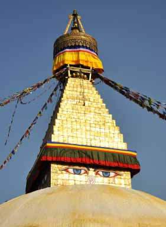

Some Stunning images of Kathmandu Valley
{kind=link}
{kind=link}
{kind=link}
{kind=link}
{kind=link}
{kind=link}
{kind=link}
{kind=link}
Kathmandu Valley Tour – Comprehensive Itinerary

Here is a comprehensive travel-plan featuring day-to-day activity and major highlights of Kathmandu Valley Tour package.
Total duration of the tour package = 4/6 days
Day 01 – Arrival at Kathmandu
When the fly you are flying on terrains at the airplane terminal of Kathmandu, you will be drawn nearer by visit staffs and escorted to your lodging. Afterward, you might need to enjoy the night-life around the visitor focus Thamel or rather take a rest, this is up to guest.
Day 02 – Bhaktapur Durbar Square and Nagarkot
Your touring starts at Bhaktapur which is the smallest district of Nepal and the third city of Kathmandu valley. Bhaktapur was previously an incredible kingdom before being attached into present day Nepal by a Shah King. The city still jam its medieval design that is clear from the structures with a conventional touch. The significant townsfolk of Bhaktapur are Newars and contrasted with the sister urban areas Kathmandu and Lalitpur, culture is very much saved here. The Durbar square-significant vacation spot of Bhaktapur is enrolled in the UNESCO world heritage list which includes taking off sanctuaries raised hundreds of years prior. Durbar square is normal term for UNESCO world heritage where the regal castle of Mallas was arranged. A portion of the fundamental landmarks in the patio are 55-window castle with craftsmanship display, Taleju sanctuary, Siddha Laxmi sanctuary and so forth. Holding fast to the Durbar square are two different squares Taumadhi and Dattatreya gloating with medieval sanctuaries that astoundingly opposed two crushing seismic tremors of 1933 and 1990. The guide will expand the points of interest to you. Aside from the principle city, the country parts of the town add to the excellence of Bhaktapur :the potters manufacturing attractive pottery out of the turning wheel, agriculturists working in the fields in conventional clothing, the back roads flanked with group of old houses and so on. Make a point to taste the delectable Juju Dhau or the king's yogurt.
In the wake of spending a decent evening here, you will drive tough to the roosted up town of Nagarkot – a perspective well known for the sights of dawn and the Himalaya crests, including the Everest. Bounteous inns give settlement to the abundant number of visitors. You will medium-term here.
Day 03 – Kathmandu city and Patan tour
In the wake of savoring the perspectives at the day break from Nagarkot, you will be escorted to Patan. The region, formally known as Lalitpur, is isolated from Kathmandu area by the heavenly stream Bagmati. The primary vacation destination of Patan is additionally the Durbar square. The place was dwelled by Malla rulers amid the medieval time of Nepal who were the rulers in Kathmandu and Bhaktapur moreover. In this way, the sanctuaries are very like what you see in Bhaktapur and Kathmandu Durbar Square. Aside from the sanctuaries and historical center around Patan Durbar square, you will likewise visit a fourteenth century Buddhist religious community which is the focal point of ceremonies of Newar Buddhists of that region. Their custom is very unique in relation to that of Tibetan Buddhists.
Your next goal is the Durbar squares of Kathmandu-3 courts viz. Kathmandu, Hanumandhoka and Basantapur Darbar squares. Here, you can watch antiquated and medieval sanctuaries with supreme structures and design. There is likewise a multi year old sanctuary worked of a solitary tree trunk – the kasthamandav, after which Kathmandu got its name. Different spots worth visiting here are Kumari (living goddess) sanctuary, 9-story royal residence, Taleju Bhawani sanctuary and Hanuman Dhoka royal residence.
At last, you will be taken to Swayambunath otherwise known as "monkey sanctuary", a religious complex comprising of a stupa (many mistake this for the Swayambhunath itself) with wall painting of Buddha's half-shut eyes in every one of the 4 bearings seating upon a Mandala and neighbored by other little places of worship (sanctuaries and cloisters) around. The mind boggling goes back to fifth century AD. A while later, you will visit the national historical center of Nepal arranged close to the Swayambhunath introduce. From here, you will be transported back to your lodging.
Day 04: Flight or prolongation of remain (see the accompanying subtle elements)
On the off chance that you have two or three days to save then it prescribed that you remain for the additional 2 days and satisfy yourself with the extra highlights of the Valley. These incorporate prominent and in addition less-investigated yet essential spots.
Alternative itinerary:
Day 04: Baudhanath- Pashupatinath- Dhulikhel
You will start your day with a drive to Bauddhanath – a stupa and one of the holiest Buddhist locales of Nepal. The place named after the stupa is occupied by numerous Tibetan outcasts alike who fled the Chinese attack in 1959. There are in excess of 50 religious communities in Baudhanath, and expect to see couple of westerners walking around red robe – the well known researcher turned-priest Matthew Ricard being one of them.
You will now travel southward to Pashupatinath which is the greatest Hindu sanctuary of Nepal and furthermore an imperative journey for all Hindus around the globe, particularly supporters of Lord Shiva. In spite of the fact that outsiders are not permitted to the principle sanctuary, you may unreservedly explore other real parts of this altar whose design is marvelous for the ones inspired by expressions. The monkeys meandering around and jogis (Indian Shiaivite loners) puffing cannabis from their bong merit watching or snapping.
Along these lines, you will drive to a suburb of Kathmandu which does not fall inside the 3 locale of the valley. Notwithstanding, the place is available in under 2 hours from Kathmandu – on account of the as of late kept up parkway with the Japanese guide. The place is additionally well known as a survey stage for the theory of pinnacles like Langtang Lirung, Dorje Lhakpa and Gauri Shankar. Dhulikhel is additionally transcendently involved by the Newars. The atmosphere of Dhulikhel is cooler than that of Kathmandu valley, particularly eminent amid the prime of summer. You will put in your night here.
Day 05 : Hike to Namo Buddha – Panauti – Kathmandu
Prior to beginning the climb to Namo Buddha, you will appreciate the dawn and pleasant acmes of mountains obvious with the dawn. A sanctuary of Hindu goddess Kali is arranged in transit. After around 3 hours of ascension, you will achieve the Namo Buddha stupa. As indicated by a legend, a sovereign turned-Buddha overpowered by outrageous sympathy submitted himself to sustain a tigress and her eager whelps. This legend is outlined in the marble section in the cloister adjacent Trango Gompa.
Presently you will slip to another Newari suburb Panauti which holds a social and authentic criticalness as well. Aside from being an imperative medieval city, the place is acclaimed for various Hindu and Buddhist sanctums. The town is arranged at the combination of Roshi and Pungmati River however a third waterway is said to go along with them imperceptibly. Since the Hindus think about conjunction of at least two waterways as a holy wonder, Panauti holds a religious significance as well. The medieval sanctuaries of Panauti, similar to those of the Kathmandu valley, persevered through the two monstrous seismic tremors amid the most recent 80 years. Subsequent to touring the old sanctuaries, you will return back to Kathmandu.
Day 06: Departure or further prolongation of stay (as your wish!)